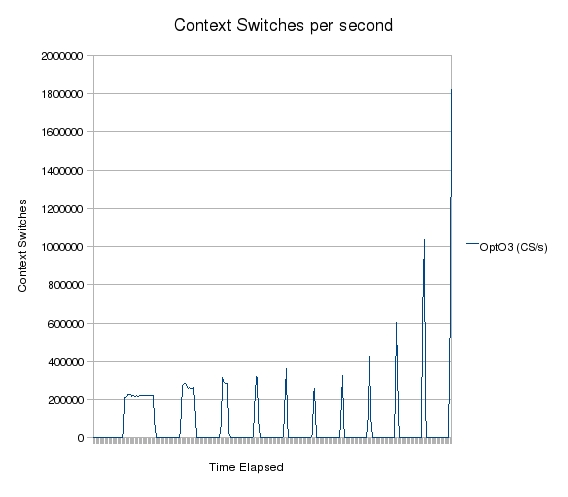
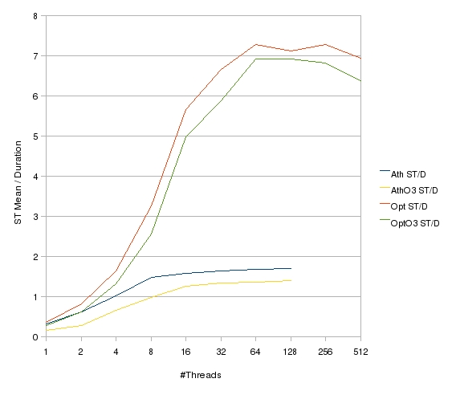
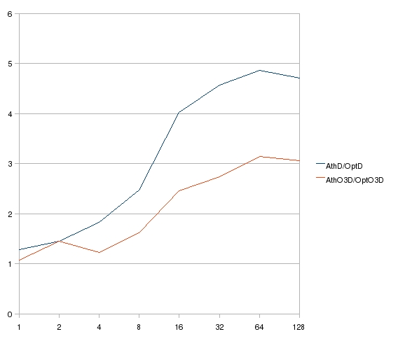

| Download version | TBA |
| Download licence | BSD |
| Trad4 version | TBA |
| Author | schevans |
| Date | 17-05-2009 |
This is an analysis of the trad4 app bond_risk. This document is still in beta - if there is anything you'd like clarified or any test you'd like to see run, please let me know.
What we'll be measuring is the duration of the initial flush on start-up under various conditions. A flush is when every node gets recalculated, as happens on start-up. As such we'll be ignoring the time it takes to load the objects from the DB (a subject for later discussion). It's important to understand that this initial flush is only the start-up time of a particular app and the performace profile during day-to-day activities will be different as the system will be responding to and fedding up discrete changes.
For each test the binary is locally compiled, and the test is run with the host in single-user mode using a non-root user and the default nice.
Unless otherwise stated, all these tests were run against the 440k data set (40k bonds, 200k each or repo and outright trades).
The tests are summarised below:
The hosts are summarised below.
| Host | Athlon | Opteron |
| Model | 64 X2 Dual Core 4800+ | Quad-Core Opteron 2354 |
| CPU GHz* | 2.4 | 2.1 |
| Cores | 2 | 8 |
| Dies | 1 | 2 |
| OS Arch | i686 | x86_64 |
| Kernel | 2.6.22-15-generic | 2.6.27-7-server |
| Compiler | gcc 4.1.3 | gcc 4.3.2 |
I will also be running a couple of these tests on a 3 year-old Intel which lacks a HyperTransport bus (QuickPath in Intel-speak), which should prove interesting.
The ST Mean value of a particular test is the mean value of 10 runs in single-threaded mode (NUM_THREADS=0). This gives us a good benchmark for the single-threaded performace of a particular arch/compiler combination.
This also gives us some information on the variance and standard deviation of these runs. This is shown in the table below:
| Test | Mean | Variance | Standard Deviation |
| Athlon | 22.3148 | 0.2297 | 0.4792 |
| AthlonO3 | 8.2094 | 1.3066 | 1.1431 |
| Opteron | 19.9114 | 0.2944 | 0.5426 |
| OpteronO3 | 13.2403 | 0.0020 | 0.0450 |
Single-threaded mode means the master thread does all the work. NUM_THREADS=1 means there is one master thread and one worker thread. Single-threaded mode is faster than NUM_THREADS=1 due to the lack of overhead of handing the work off to the worker thread.
The context-switch cascade occurs when there are too many threads on a host, and the kernel spends all it's time switching between threads and not getting any work done, so the host becomes unresponsive and unusable. It is the hard limit on the number of threads we can run per host. This is given below:
| Host | Max Threads |
| Athlon | 128 |
| Opteron | 512 |
For this reason no data is given for the Athlon where NUM_THREADS>128.
| Num Threads | Athlon Time | Opteron Time |
| 1 | 70.05 | 54.82 |
| 2 | 35.83 | 24.59 |
| 4 | 22.13 | 12.12 |
| 8 | 15.06 | 6.11 |
| 16 | 14.15 | 3.51 |
| 32 | 13.66 | 2.99 |
| 64 | 13.3 | 2.73 |
| 128 | 13.2 | 2.8 |
| 256 | 2.74 | |
| 512 | 2.87 |
From this test we can see several things. firstly, by comparing the ST Mean of both the Athlon and Opteron we can see the single-core CPU speed is roughly comparable with the Opteron coming in as slightly faster.
Second, we can see that the multi-threaded Athlon is about twice as fast as the ST Mean. Likewise the multi-threaded Opteron is about eight times faster than the ST Mean. This we would expect as the Athlon is dual-cored and the Opteron is 8-cored.
Last, we can see that the multi-threaded Opteron is about four times as fast as the multi-threaded Athlon. Again we would expect this as the Opteron has four-times as many cores.
| Num Cores | Athlon Time | Opteron Time |
| 1 | 49.98 | 46.79 |
| 2 | 30.68 | 21.24 |
| 4 | 12.37 | 10.13 |
| 8 | 8.37 | 5.19 |
| 16 | 6.52 | 2.66 |
| 32 | 6.17 | 2.25 |
| 64 | 6.01 | 1.92 |
| 128 | 5.85 | 1.91 |
| 256 | 1.94 | |
| 512 | 2.08 |

The first thing we notice on this graph is that the Athlon binary has improved with optimisation (-O3) significantly more than the Opteron - the Athlon's ST Mean is not only faster than the Opteron now, there's also a bigger disparity between the two ST Means. This is a somewhat unexpected result and one I'll be looking into in the future.
For this reason the multi-threaded Opteron is only about three times faster than the Athlon, when we expected a four-fold increase.
This is a somewhat unexpected result and one I'll be looking into in the future. My hypothesis is that the gcc 4.3.2 optimiser on x86_64 isn't as effective as the gcc 4.1.3 optimiser on i686. The fact the ST Means show the same pattern suggests I'm not hitting some not-yet-understood limit of the trad4 architecture.
| Num Threads | Opteron Time | Opteron CS |
| 1 | 46.79 | 105.75 |
| 2 | 21.24 | 55.69 |
| 4 | 10.13 | 30.76 |
| 8 | 5.19 | 16.94 |
| 16 | 2.66 | 11.13 |
| 32 | 2.25 | 9.2 |
| 64 | 1.92 | 8.89 |
| 128 | 1.91 | 10.01 |
| 256 | 1.94 | 13.63 |
| 512 | 2.08 | 23.78 |
This graph shows the duration and number of context switches against log2 num threads, using an optimised Opteron.
The reason for the high number of context switches for a low number of threads is simply because the run has a longer duration and therefore a longer context-switch sample period. This is better illustrated in the graph below.
Another observation we can make is that even after the number of context switches starts to climb, the duration continues to fall (albeit slightly). This suggests any optimisation strategy should not be an attempt to minimise the context-switches - it is only when the cascade starts will we see performance drop off.

This data was collected from a second process collecting CS/s stats while an optimised Operon run was taking place. As such the x-axis shows real-time and each peak corresponds to a bond_risk run where the number of threads are dobled each run.
You can now see why the NUM_THREADS=1 run in Test3 was inflated by the time it took to complete the run. The CS/run data in Test3 corresponds to the integration of each peak on this graph.
You can see the beginnings of the context switch cascade on the NUM_THREADS=1024 spike. When this occurs the process monitoring CS/s can't get enough time on the CPU to record the CS/s, so the experiment is terminated.


To run the tests:
Pro Tip: Run benchmarker.sh in the foreground so that it's easy to kill once you hit the context switch cascade. If in a multi-user/desktop environment and you don't run in the foreground you may have to hard-reboot your machine.